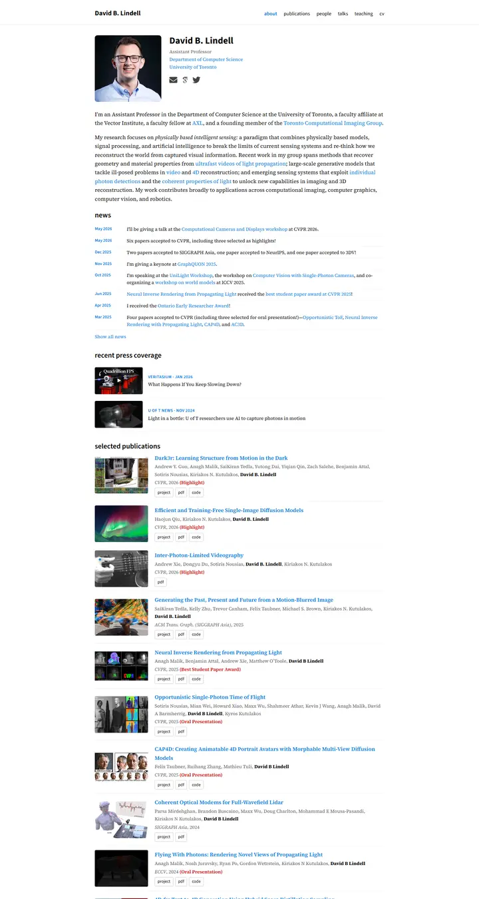
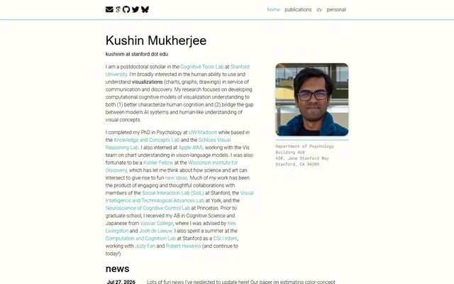

David B. Lindell
A lab notebook typeset by a careful editor: Source Serif prose, Source Sans labels, one clear blue, and every paper filed with its photograph.

Checked against the rendered page.
Why it is here
Well-balanced header, a press-coverage strip and a thumbnail publication list with consistent badges. Strong presentation of visual work.
Overview
Color Palette
Typography
Source Serif 4
David B. Lindell, computational imaging, 3D vision
Abstract · Method · Results · BibTeX — 0123456789
Source Sans 3
David B. Lindell, computational imaging, 3D vision
Abstract · Method · Results · BibTeX — 0123456789
Font Awesome 5
David B. Lindell, computational imaging, 3D vision
Abstract · Method · Results · BibTeX — 0123456789
Spacing & Shape
Page Modules
Guidelines
More like this

Kushin Mukherjee
Cream notepaper with a teal pen: light Roboto prose, a rounded portrait over a typewritten address, and a dated news ledger ruled in turquoise.

Amir Bar
A clean faculty prospectus in Imperial blue: Inter on white, pill links, and paper cards that lift a few pixels when you reach for them.

Anagh Malik
The Barron table, warmed with apricot: Lato at 14px, blue links that flash orange, and the papers that matter sitting in a band of late-afternoon light.

Christoph Feichtenhofer
A conference-hall banner in Facebook blue, then a long ledger of papers in red ink, green venues and justified grey abstracts.

David Novotny
A harbour at dusk beside a quiet reading room: a fixed teal-to-midnight panel with right-aligned contact lines, and soft grey text with tangerine links on white.

Jaeyeon Kim
A quiet seminar handout in light Roboto, where one red-highlighted question and a row of mint tags are the only raised voices.